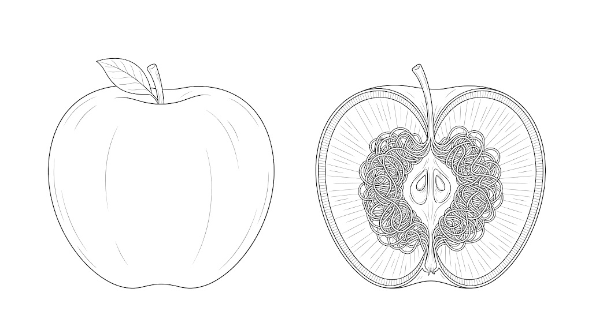

影片的標題是「立刻別再碰收據」，那確實是裡面講到的事，但不是這場訪談真正的重量所在。兩個半小時裡最值得帶走的是一個很不舒服的事實：有一層脂肪，它跟你的體重幾乎沒有關係，你量不到、看不到、捏不到，但它會主動製造你的疲倦、你的腦霧、你飯後那陣突如其來的飢餓。健康的年輕男性只要睡不夠兩週，它就能長出一成一，而體重計上一磅都不會動。這篇把這場訪談拆成四件事，並且在每一段標清楚哪一句可以直接照做、哪一句只是一個單一研究的方向。
Rhonda Patrick 是生醫博士、長期做科學轉譯，她引用文獻的密度比一般健康節目高得多。但這集裡有三個地方要主動打折：①幾個招牌數字來自單一小型試驗（睡眠限制 11%、五天過食就出現脂肪肝），受試者都是樣本數不大的年輕健康男性，方向可信、精確倍數別當定值。②毒素那一段的倍數幾乎全是觀察性研究（BPA 最高組睪固酮低 50% 這類），相關不等於因果。③她跟她推薦的東西有財務關係：她是酮體飲品公司的投資人、節目本身也由該公司贊助，另外點名了自己吃的補充品品牌。她在訪談裡確實有好幾次主動揭露、也說過「這可能是安慰劑」，這比多數同類節目誠實，但不改變結構性偏誤。讀法：機制與判準可收，清單與劑量當成一個人的自我實驗。
這篇按影片的時序走，因為這場訪談本身的推進意外地有邏輯：先建立「內臟脂肪是什麼」這個共同語言 → 再一個一個交出把它推上去的槓桿 → 中途走進主持人的廚房實地拆解毒素 → 回到攝影棚談補充品 → 最後才拉高到「怎麼維持巔峰」與運動處方。每一段開頭我會補一句它跟前段的關係，這樣你不看影片也讀得下去。
01那一層你捏不到的脂肪，以及它為什麼是個器官▶ 2:45
先把名詞分清楚，因為後面所有東西都建立在這個分別上。皮下脂肪是你捏得到的那層，在皮膚底下。內臟脂肪在腹腔深處，包著肝、腎、腸子。
差別不只是位置，而是它做的事完全不同。皮下脂肪比較像倉庫：你吃飽了，它就停止分解脂肪、乖乖把能量收起來。內臟脂肪不是倉庫，它是一個持續運轉的工廠，不斷把三酸甘油酯拆成游離脂肪酸往血液裡送，而且它對胰島素的指令沒有反應，你吃飽了它也不停。同時它會分泌發炎細胞激素，等於你身體裡多了一個永遠在冒煙的火源。
這帶出這一段最反直覺的地方：它可以跟你的外表完全脫鉤。有一種人叫「外瘦內胖」，體型很瘦，但代謝數據看起來像個過重的人。主持人自己就講了一個例子：他跟一位朋友一起去做 DEXA 掃描，他自己體型大得多，結果被判定內臟脂肪過高的是那位又瘦又小的朋友。Patrick 說她做臨床研究時常遇到這種人，「如果你只給我看他的代謝數據，我會說這是個肥胖的人」。
至於它有多危險，她給了兩個數字：內臟脂肪高的人早死風險加倍、轉移性癌症風險高 44%。而且它隨年齡穩定上升，50 歲以上的女性有 70%、男性有 50% 已經過量。
最省事的代理指標是腰圍：男性 40 吋（約 101 公分）以上、女性 35 吋（約 89 公分）以上就是警訊。要精準就做 DEXA 掃描，理想值是低於 300 公克，越接近零越好。唯一沒用的是體重計，內臟脂肪是幾百公克在動，這個量級完全被每天的正常體重波動蓋過去。
那它為什麼會讓你覺得累？這是兩條路同時發生。第一條是能量被搶走：免疫系統長期被那些發炎物質活化，而活化免疫系統極耗能量，那些能量本來要給大腦。Patrick 用了一個好懂的類比，想想你感冒的時候，那幾天你既疲倦、腦子也不轉，那就是同一件事，只是強度不同。第二條是發炎物質本身會進到腦裡干擾神經傳導物質。所以「一直覺得累、腦子鈍鈍的」這件事，有可能根本不是睡眠或心理問題。

外觀一樣 · 體重也一樣 差別全在核心周圍那一團02睡不夠兩週，多一成內臟脂肪，體重一磅沒動▶ 14:23
上一段講的是「它是什麼、多危險」；這一段開始交槓桿，而她排第一的不是飲食，是睡眠。
研究本身很簡單：健康的年輕男性，每晚只睡 4 小時、連續兩週。結果是內臟脂肪增加 11%，而體重幾乎沒變。
機制上它接得回第一段：睡眠不足直接造成胰島素阻抗，而胰島素阻抗就是讓內臟脂肪繼續長的那個條件。這是這場訪談裡第一次出現「輪子」的形狀，內臟脂肪造成胰島素阻抗，胰島素阻抗又製造更多內臟脂肪。
Patrick 自己的例子比研究更有說服力。她當新手媽媽那陣子戴了連續血糖監測器，看到自己的空腹血糖與飯後血糖都掉進糖尿病前期的範圍，「我簡直不敢相信，我又不是在喝可樂亂吃」。變的不是飲食，是睡眠與活動量。
第二個槓桿是熱量過剩，而它作用得比想像中快。另一個研究讓健康年輕男性每天多吃 1200 到 1500 大卡（大約多一份速食套餐的量），只做五天：開始囤內臟脂肪、出現脂肪肝跡象，而且，這一條最值得注意，他們的大腦也出現了胰島素阻抗。
大腦這條為什麼重要？因為胰島素在大腦裡的工作，是指揮身體「能量該存到哪裡」。當大腦收不到這個訊號，身體就回到預設值，而預設值就是往內臟囤。這解釋了為什麼這個循環一旦開始就那麼難停。
多個研究都指向「三小時」這個數字，理由是機制性的：進食會活化交感神經（戰或逃那條），而睡眠需要的是副交感（休息修復）主導。睡前一小時吃大餐，你就算睡著了也是片段化的淺睡。真的必須吃就吃輕的，例如一杯蛋白飲。
她另外提到一個有趣的東西：抗性澱粉似乎有助睡眠。做法是米飯或馬鈴薯煮熟後放涼，之後要吃可以再加熱，關鍵是中間必須經過冷卻，澱粉結構會改變成腸道菌愛吃的形式。青香蕉也含有。
剩下三個是放大器，不是主力：慢性壓力（皮質醇把能量導向內臟，在「熱量過剩＋不運動」的情境下特別傷）、酒精（「啤酒肚就是內臟脂肪，不是啤酒」）、荷爾蒙下降。荷爾蒙這條男女機制相反且值得知道：雌激素的工作是告訴身體「存在皮下、不要存在內臟」，所以女性在停經前期雌激素崩落時內臟脂肪會突然冒出來，而且加速從最後一次月經的前兩年就開始；睪固酮則是幫你燃燒內臟脂肪，所以男性 30 歲後每年掉約 1% 睪固酮，累積下來就算體重沒變、內臟脂肪也會一路往上。
03那個輪子怎麼轉，以及為什麼你飯後會突然餓▶ 21:48
前兩段一直在說「胰島素阻抗」這個詞，這一段把它拆開，因為它是後面所有處方的共同底層。
正常的流程是這樣：你吃東西 → 血糖上升 → 胰臟分泌胰島素 → 胰島素去通知肝臟、肌肉、脂肪組織把葡萄糖收進去。主持人給了一個很好的比喻，Patrick 也接受了：胰島素是那個計程車司機，負責把葡萄糖載回家。
胰島素阻抗就是電話打了、但沒人接。 內臟脂肪不停製造的游離脂肪酸讓這通電話發不出去，於是葡萄糖留在血液裡（久留會傷血管）。身體以為是劑量不夠，就分泌更多胰島素去代償。等到代償終於奏效，葡萄糖被一口氣大量收走，血糖反而掉到正常線以下。
這就是很多人「吃完飯一小時後突然沒力、又餓、想吃高熱量東西」的來源。那不是意志力問題，是這條迴路的第一階段。 而它會自己惡化：吃了高熱量的東西 → 更多內臟脂肪 → 更嚴重的阻抗 → 更強的飢餓訊號。
怎麼打斷它？她給的答案跟這個圖直接對應：身體活動會讓肌肉的葡萄糖轉運蛋白變得極度活躍，而且這條路不需要胰島素。等於繞過了塞住的那一格。
好消息在這裡：內臟脂肪是最先掉的那一層。 任何造成脂肪淨減少的方式，運動、熱量限制、間歇斷食、GLP-1 藥物，都是先動它。但運動類型有分別：想掉內臟脂肪要做有氧、而且越劇烈越好（跑、游、騎）；重訓對內臟脂肪本身「動不了針」，它的價值在提升肌肉的胰島素敏感度與保肌，是必要的，但不是這個目標的主力。
這個結論跟庫裡的 84 項研究排名內臟脂肪運動 完全一致（劇烈有氧與 HIIT 並列第一、重訓墊底）。值得注意的是兩邊的方法論完全不同：那篇是把 84 個隨機對照試驗放進網絡統合分析算出來的族群統計，Patrick 這邊是從生理機制推的。兩個互相獨立的路徑指向同一件事，這種印證比任何單篇的數字都值錢。反過來說，看到只有一個來源支持的結論，就該自動打折，這是讀健康內容最有用的一個習慣。
04斷食其實是兩件事，你在追哪一個▶ 25:41
上一段結尾說「任何造成脂肪淨減少的方式都有效」，斷食就是其中一種。但這一段的價值不在於她做 16:8，而在於她把兩件被混著講的事拆開了。
第一件是減脂。她講得很直白：斷食幫你減脂的方式，就是讓你少吃，沒有別的。她選它的理由完全是務實的，「算熱量太麻煩，我跳過一餐就不用想」。如果你追的是這一半，那斷食只是眾多降熱量工具的其中一個，不比別的高明。
第二件是代謝切換，這才是斷食獨有的東西。肝臟把葡萄糖存成肝醣，大約 10 到 12 小時會耗盡（吃越多精製碳水就拖越久）。耗盡之後身體沒有現成燃料，開始動員脂肪來燒，副產物就是酮體。訪談裡的比喻是燃料換檔：汽油用完了，車子改燒柴油。
她說在這個狀態下的體感是認知更清晰、焦慮更低，而且給了機制：酮體會提高 GABA，一種抑制性神經傳導物質，白話講就是讓人平靜下來的那種。背景焦慮降下來，注意力就集中得起來。這也是她刻意把斷食放在早上的原因，她要在那個狀態下工作。
還有第三個理由是修復。進食狀態是身體「生長」的模式，而生長必然伴隨損傷；斷食狀態才是修復被拉高的時候。她說她不想一起床就吃，「那樣肝醣才剛耗完，修復期根本還沒待夠久」。
她空腹做有氧，理由是多個研究顯示空腹做耐力訓練的粒線體適應更好：身體因為沒有現成燃料，被迫變得更會燒脂肪，而且這個能力會延續一整天。
但她自己畫的界線非常清楚：「我去跑三英里會空腹，去跑十英里不會，那需要燃料。」超過大約 30 分鐘、或高量長時間的課表就該進食。
女性另有一層風險：長期熱量赤字＋高訓練量＋補給不足會打亂性荷爾蒙、造成停經。她自己 20 幾歲跑馬拉松時就把自己搞成這樣過，每天跑 8 到 10 英里，然後「只吃紅蘿蔔跟鷹嘴豆泥」。
而她給的第一判準不是研究，是體感：「空腹訓練你感覺很糟嗎？那就別做。聽身體的話是你能做的最重要的事。」
最後一條護欄適用於所有減重手段，包括後面會講到的 GLP-1：一定要配足夠蛋白質＋阻力訓練。否則掉的體重裡最多可以有 40% 是淨體重（含肌肉）。目標是掉內臟脂肪、保住肌肉，不是讓體重計的數字變小。
05三種化學物質，以及一趟廚房實地拆解▶ 42:14
這一段是怎麼從代謝跳到塑膠的？接點是睪固酮。上一段講到男性睪固酮下降會讓內臟脂肪更難燒掉，而過去二十年男性睪固酮整體下降了約 20%。Patrick 認為飲食、睡眠、微量營養素都有份，但「最大的角色其實是環境的」。
三類內分泌干擾物，各自的作用機制不同：
訪談中段他們真的走進主持人的廚房，逐項拆解。如果這一整段你只記一件事，記這個三條件：
所以最該優先處理的三個情境是：熱食裝塑膠、油脂類食物包軟膜、番茄醬辣醬裝塑膠瓶。以下是她在那趟廚房巡禮裡按嚴重度排的替換清單：
- 黑色塑膠容器與鍋鏟（最該先丟的一項）：黑色塑膠多半是用回收電子廢料做的，而電子產品含阻燃劑，那是為了讓電子產品不起火而加的，多項研究已驗出它滲進食物。裝熱食更糟。
- 果汁機／調理機的塑膠上蓋（最容易被忽略的一項）：摩擦會釋出比靜置高出好幾個數量級的微塑膠。她自己換成不鏽鋼機身版本，理由是「你每天早上在喝的是微塑膠加化學物質」。
- 醬料改玻璃瓶：辣醬、番茄醬是酸性的，而且你天天淋在食物上。
- 罐頭湯：內襯是 BPA，而且裝填時是熱的。研究顯示喝罐頭湯讓體內 BPA 濃度上升 1000%。
- 外帶餐盒：最佳解是玻璃盒＋竹蓋，紙盒次之（邊緣的蠟質層仍是 PFAs，但比黑色塑膠好）。
- 矽膠鍋鏟改木頭：理論上矽膠沒問題，但市面上很多矽膠混了塑膠，加熱一樣滲。
- 一般濾水壺改反滲透（RO）：一般濾水壺只濾大顆粒，而且濾完裝進塑膠壺等於把塑膠加回去。RO 能濾掉微塑膠、奈米塑膠、BPA 與塑化劑。但有代價：它也會濾掉必需的微量元素，要靠綜合維他命礦物質或微量元素滴劑補回。
① 收據為什麼真的要小心。 熱感應紙整張塗滿 BPA，那正是它顯影的原理，不是印上去的。經常接觸收據的收銀員尿中 BPA 濃度極高。更糟的是乾洗手或護手霜會把它帶進去，BPA 是脂溶性的，這些乳液讓穿透率高出約一百倍。做法：能要電子收據就要；職業性接觸的人戴丁腈手套，乳膠手套擋不住。
② 玻璃瓶裝水的微塑膠比塑膠瓶還多，但她仍然選玻璃。 一項研究發現如此，來源是瓶蓋上的塗料（含塑膠聚合物）在裝瓶時掉進水裡。她的理由是粒徑：玻璃瓶裡的是大顆的微塑膠，人體吸收不良、多半隨糞便排出；塑膠瓶裡的是奈米塑膠，會穿過腸道進入血液，而且還額外附帶 BPA 與塑化劑。這是一個很好的思考範例：「數量多」不等於「危害大」。下次遇到這種對比，先問粒徑、劑量、生物可利用性，別只比數量。
排出那一邊也有辦法。BPA 必須先變成水溶性才排得出去，而蘿蔔硫素（青花菜裡的化合物）能活化負責這件事的解毒酶。青花菜芽的含量是成熟青花菜的 100 倍。她自己吃補充品而不自己發芽（有污染風險），這裡她點名了品牌，屬於利益相關的段落，打折看。
整段的收尾態度值得抄下來，因為它防止你走火入魔：「重點是習慣，不是單一次。偶爾一次沒關係，別把自己搞瘋，壓力本身也對代謝有害。」
06補充品：兩個判準，比任何清單都有用▶ 1:09:05
從廚房回到攝影棚，主持人搬出自己的補充品櫃請她一項一項評。這一段最容易被當成「大師的推薦清單」來讀，但那是最沒價值的讀法，清單一年就過期，她判斷的方式不會。她整段其實只在用兩個問題篩東西。
被問到「只能選五個」時，她的順序是：魚油（Omega-3）→ 維生素 D3 → 綜合維他命 → 鎂 → 肌酸。前三個她說是「證據強到我願意排最前面」的：高 omega-3 指數對應多五年預期壽命、阿茲海默症風險低 66%；綜合維他命那個研究裡 65 歲以上長者吃三年，整體腦齡逆轉 2.1 年、情節記憶年齡逆轉近 5 年。鎂排第四的理由很實際：它參與 300 種酶、幫助修復 DNA、也幫助睡眠，而一半的人口攝取不足，會流汗的人更缺。
肌酸那一段有個實用的誤解要澄清，而且它剛好解釋了很多人為什麼放棄：
研究裡那個「每天 20 克灌三四天」的 loading 期，是因為研究者要在短時間內把受試者的肌肉存量填滿，不是因為你需要。一般人每天 5 克、連續 3 到 4 週就會飽和。
所以「吃了一週沒感覺就停」是很常見的放棄點，那根本還沒到會有感覺的時候。
其他細節：5 克造成脹氣或噁心就拆成 2.5 克分兩次、或配碳水一起吃。腦部需要更高劑量，德國的研究顯示要到 10 克才明顯進得了特定腦區，因為「肌肉很貪心」，低劑量都被肌肉先搶走了。還有一句該記得：它不會替你長肌肉，它給的是「能做更多訓練量」的能量，肌肉還是要靠訓練長。
其他她自己在吃的東西裡，有一條是減脂期真的會踩到的陷阱，值得單獨拉出來：外源性酮體（直接把血中酮體拉高的飲品）確實會帶來認知提升，但如果你正在為了減脂而斷食，吃它會抵銷你的目的，身體燃燒脂肪的目的之一就是產生酮體，你直接把酮體餵給它，它會判定「已經有了」，於是關掉脂解作用，大約持續三小時。她自己不每天吃就是這個原因。（這也是她揭露有財務關係的那個產品類別，一起放進來看。）
最後一個小而具體的：魚油要冷凍。它是多元不飽和脂肪酸、極易氧化，放室溫等於在抵銷你買它的目的。她的做法是庫存冷凍、開封中的那瓶放冷藏。
07peakspan：沒生病，不代表你沒有在下滑▶ 1:48:18
前面幾段都在處理具體的槓桿，這一段把視角拉高，問的是「這些槓桿到底在服務什麼目標」。
三個層次，一層比一層難：lifespan 是活久一點；healthspan 是活久而且沒有疾病；peakspan 是維持在個人巔峰功能的 90% 以內。
差別在哪？healthspan 只要求你沒有病，但一個沒有病的人仍然在持續下滑。peakspan 問的是能不能不要掉到巔峰的九成以下。（這概念來自杜克大學等單位的預印本研究，尚未經過同儕審查，所以是個新框架、不是定論。）
各項功能的巔峰年齡不同，而這張表本身就有點衝擊力：肌肉量、骨密度、免疫功能、心肺適能，還有流體智力（不靠既有知識、當場解題的能力）都在 25 歲左右見頂就開始往下。主持人聽到當場說「所以我已經在下坡了」。
唯一的例外是晶體智力，把累積的事實與經驗拿來解決問題的能力，它到 40 到 45 歲才見頂。Patrick 自己的說法很具體：「我當生物學家 27 年了，現在腦子後面有一整個資料庫，坐在這裡就能調出來用。」這也解釋了為什麼很多需要模式辨識的工作，在中年反而更強。
維持認知的三件事，順序就是她給的優先序：①有氧運動（排第一）②omega-3 ③新奇的認知經驗。第三條的關鍵字是新，學新語言與阿茲海默症風險快速下降有關；退休後坐著看電視是最糟的選項之一。經典例證是倫敦計程車司機：要考「The Knowledge」得背下兩萬五千條街道、不用 GPS，這群人的海馬迴（記憶中樞）實際上比較大。
然後訪談轉到了 AI，而這一段的機制跟上面的「新奇」是同一個。他們引用了一項研究：83% 用 AI 協助寫作的人，事後想不起自己寫過的內容細節；EEG 顯示把思考外包給 AI 時，大腦連結度幾乎減半。研究者用的詞是 cognitive debt（認知負債），你更快拿到產出，但沒有蓋出理解它所需的神經硬體。
樣本不大，而且從「EEG 連結度下降」推到「理解變差」，中間那條鏈不短。當方向與警訊看，別當定論引用。不過兩位講的因應方式，本身不依賴這個研究成不成立，它只是「新奇性才長腦」這條的另一個說法。
兩人給的做法一致：手寫或重打一遍。Patrick 自己的流程是「查資料 → 打進文件 → 再手寫一次」，她說統計數字特別需要這道工。關鍵的一句是：單純複製貼上再回想是沒有用的，因為新奇性不在，你並沒有真的在學。主持人的說法則是把它當心智健身房，因為生活變輕鬆才需要上健身房，AI 讓思考變輕鬆，就得刻意留時間自己解難題。他的理由值得記下來：AI 給你答案，但不給你第一原理的地基，「如果從沒人告訴你『一』是什麼，你永遠沒辦法自己用它。」
08那個 2:1 是怎麼來的，以及為什麼它錯了▶ 2:10:54
上一段說維持 peakspan 的第一槓桿是運動，這一段就是那個槓桿的具體規格，而她認為現在流通的規格是錯的。
現行指引是「每週 150 到 300 分鐘中等強度或 75 到 150 分鐘劇烈強度」，也就是 2:1。這個比例的來源是熱量消耗：慢跑一英里燒的熱量大約是走一英里的兩倍。
問題就在這裡：燒多少熱量，跟降低多少死亡率，是兩件不同的事。 指引拿「熱量消耗的 2:1」去接「降低死亡率需要多少運動」的研究，中間那一步是連連看。而且那些研究多半用問卷在估運動量，不是實際測量。
一項改用加速度計實際測量的新研究（她為此專門做了一集 journal club）算出了完全不同的交換率。這張表是這一段的核心：
| 健康終點 | 1 分鐘劇烈 ≈ 中等強度 | ≈ 輕度活動 |
|---|---|---|
| 全因死亡率 | 4 分鐘 | 100–150 分鐘 |
| 心血管死亡 | 8 分鐘 | 200 分鐘 |
| 第二型糖尿病風險 | 10 分鐘 | 200 分鐘 |
| 癌症死亡 | 4 分鐘 | 250–300 分鐘 |
強度怎麼定義？研究本身量的是加速度（動得快不快），不是心率，這也是為什麼快速的重訓動作也被算進去。她自己給的心率換算是：劇烈約等於最大心率的 70% 以上（慢跑、跑步、游泳、騎車的節奏），HIIT 是更上面的 80% 以上；中等大約 50%（快走）。
然後是這一段最實用的部分。因為加速度計戴在手腕上，它捕捉到了那些不會被記進運動日誌的片段，跟小孩玩鬼抓人衝刺一分鐘、追一下狗。結果是：
- 女性每天只要 3.5 分鐘這類零碎的劇烈活動，癌症風險低 40%。
- 男女合併的較大型研究：每天累積 9 分鐘（一分鐘這裡、一分鐘那裡，不必連續），癌症死亡率低 40%、心血管死亡率低 50%。
所以她主張把「每天一萬步」換成「每天 10 分鐘把心率拉起來」。理由不是一萬步沒用，是一萬步多半落在輕度區間（在家或辦公室走來走去很容易就六七千步），照上面的交換率，那個效率低到不成比例。她講到這裡有補一句持平的話：「任何運動都比不運動好，我不是要全盤否定一萬步。」
這一段還有一個獨立的觀念，而且它跟「有沒有運動」無關：
Patrick 說她自己以前也搞錯：sedentary 指的是坐著的時間，不是「有沒有運動」這個是非題。即使你有規律運動，久坐仍然是獨立的疾病風險因子，跟癌症的相關性最強。
解法是打斷它，不是抵銷它：每小時起來做一分鐘徒手深蹲、開合跳、高抬腿，她稱之為 exercise snacks。這件事一石二鳥，它既把「連續八小時」變成「一小時」，本身又是劇烈強度，直接計入上面那個 9 分鐘。她形容做完的感覺是「腦子有一陣泵感，馬上就比較舒服」。
09GLP-1：她的評估是分族群的，不是一句好或不好▶ 2:24:07
最後一段收在藥物上，而它其實是把整場訪談的所有線收攏了：這類藥做的事，本質上就是幫你執行第 04 段講的熱量限制。
她先把好處講足，沒有含糊：對真正肥胖的人，這是改變人生的工具。掉的體重確實把心血管、癌症、阿茲海默症的風險一起帶下去。「靠飲食跟生活習慣減掉 30 到 50 磅並不容易」，這句她說得很直白。
機制是作用在飽足感荷爾蒙、同時減慢胃排空，讓食物在腸道停留更久，於是你不覺得餓。你不必忍，它替你忍了。
然後是代價，而第一條就是最大的一條：可能得吃一輩子。停藥後多數人復胖，而且食慾回來得比原本更兇猛。他們引用《紐約時報》報導的一個個案：一位女性掉了 50 磅、因保險問題停藥後，一個月內胖回 20 磅，她形容飢餓的回歸不是漸進的，而是一種兇猛的、動物性的進食衝動，比她用藥前更強烈。所以要停就慢慢減量，別直接停。
其餘的代價：肌肉與骨質流失（這一條多半來自快速減重＋蛋白質不足＋不做阻力訓練，不一定是藥本身，所以第 04 段那條護欄在這裡再次適用）、腎臟癌訊號上升（原因不明）、膽結石風險上升、以及甲狀腺癌的黑框警語（僅來自動物數據，人體未證實）。
她最有意見的其實不是藥本身，是使用族群的擴散：現在很多人是為了「想輕鬆掉 10 磅」在用，而這個族群根本沒有證據支持有好處。「我們不知道對他們有沒有益處，他們本來就已經很瘦了。」
她給的替代錨點正好把這篇收回開頭：在最低劑量下，間歇斷食可以達到跟低劑量 GLP-1 差不多的減重幅度（體重的 5 到 10%），沒有副作用、也沒有復胖的問題，因為「你的身體會適應，斷食會越來越容易」。
最直接的一篇是 84 項研究排名內臟脂肪運動，那篇是排行榜（做哪種有效），這篇是機轉（為什麼會囤），兩篇的結論一致但方法論完全不同，見 §03 的交叉印證盒。運動與減重的演化視角在 運動、跑步與健康的演化真相（合起來看是「減總重靠飲食、清內臟脂肪靠有氧」）。睡眠這件事在庫裡現在有五個不同的終點：時數（Lieberman）、睪固酮（性健康與睪固酮）、睡眠結構（維生素 D 與睡眠）、能量帳本（身體預算），加上這篇的身體組成，同一件事的五種量法，混講必誤導。補充品那一段最值得跟 老化是可以重灌的嗎 對照著讀：兩人的利益結構高度相似（都是有科學訓練的長壽傳播者、都與自己推薦的東西有財務關係、都把動物數據講得比人體數據響亮），差別只在自我揭露的誠實程度。讀法應該一樣：機制與判準可收，清單與劑量當成一個人的自我實驗。
—怎麼用在你身上
- 你已經在做的那一半，這篇是確認、不是新動作：大量有氧＋間歇正好落在她說「唯一真正能清內臟脂肪」的那一區，而且跟庫裡那份 84 研究排名互相印證。這篇對耐力訓練者的價值不在補新東西，在於它解釋了為什麼那些訓練有效。
- 真正該裝進去的新東西是「強度的碎片價值」：以前你可能覺得「今天沒排課表＝今天沒運動」。那張交換率表說的是，一天裡零碎湊到 9 分鐘的劇烈活動，本身就有 40% 到 50% 的死亡率意義。這對減量週、傷後恢復期、出差沒器材的日子特別有用，那些日子不是零。
- 久坐那條跟訓練量無關，所以最容易漏：坐一整天工作，即使早上已經練過，那個風險仍在。每小時起來一分鐘就處理掉了，而且它同時計入上一條的 9 分鐘。這大概是整篇裡投入產出比最高的一個動作。
- 睡眠這條要換一個看法：你原本可能把睡眠當「恢復好不好」的變數，這篇加了一個新的後果，睡不夠直接改變身體組成，而體重計不會告訴你。拉量期壓縮睡眠的代價，因此不只是隔天狀態差。
- 塑膠那段只做「順手能換就換」的層級，別讓它變成焦慮：對訓練量大的人，熱量與蛋白質達標永遠優先於微塑膠。真的值得動手的是三件低摩擦的事，熱食別裝塑膠盒、醬料改玻璃、不沾鍋壽命到了換不鏽鋼。她自己那句「重點是習慣不是單一次，壓力本身也傷代謝」就是分寸所在。
- 補充品那兩個判準可以直接拿去用在別的地方：「這個形式有效嗎」跟「我原本缺嗎」不只適用於補充品，任何有人推薦你的東西都可以先過這兩關。至於清單本身，先問自己缺不缺，別因為她排第一就去買。
- AI 那條值得認真對待一次：如果一份東西你希望自己真的學會（而不只是產出），那就重新用自己的話寫一遍。這跟你已經在做的整理習慣是同一個機制，差別在於是「複製貼上」還是「自己重述一次」，前者不算學習。